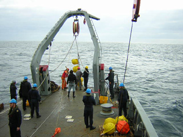

| Noticias (todas las noticias) |
- Curso Internacional ECODIM (25-07-2011): El curso internacional "ECODIM: Ecology and Diversity of Marine Microorganisms" (http://www.profc.udec.cl/ecodim) se llevará a cabo entre el 9 y el 27 de enero de 2012.
- Publicación reciente (03-12-2010): El artículo "A criptic sulfur cycle in oxigen-minimum-zone waters off the chilean coast" de los autores Canfield et al. ha sido publicado en la revista Science (Resumen).
- Deep Sea Research II sobre Zona de Mínimo de Oxígeno (26-06-2009): Un número especial sobre la Zona de Mínimo de Oxígeno del Pacífico Sudoriental se ha publicado en Deep Sea Research II (link).
PROFC 
El Laboratorio de Procesos Oceanográficos y Clima (PROFC) es un grupo de investigación dedicado al estudio científico del océano y de su relación con el clima. Fue creado en 1997 -originalmente como el Programa Regional de Oceanografía Física y Clima- bajo la Dirección de Investigación de la Universidad de Concepción y con el apoyo de la Agencia Sueca de Cooperación para el Desarrollo Internacional y de Fundación Andes.
El PROFC agrupa a investigadores del Departamento de Oceanografía de la Facultad de Ciencias Naturales y Oceanográficas y del Departamento de Geofísica de la Facultad de Ciencias Físicas y Matemáticas de la Universidad de Concepción, además de postdoctorantes, ingenieros, técnicos, estudiantes y personal de apoyo. También, actualmente miembros del PROFC participan del Centro FONDAP de Investigación Oceanográfica, COPAS, y del Anillo Bicentenario.
Las áreas de investigación del grupo son: oceanografía física, acoplamiento físico-biológico, biogeoquímica y oceanografía microbiana, pero mucho del trabajo es interdisciplinario. También el PROFC cuenta con un servicio de calibración de perfiladores de conductividad, temperatura y presión (CTDs) y de análisis isotópico, y con un área de desarrollo de instrumental oceanográfico.
El financiamiento del PROFC proviene de la Universidad de Concepción y de proyectos concursables en agencias y programas nacionales e internacionales, incluyendo a FONDECYT, FONDAP, Fundación Andes, Inter-American Institute for Global Change Research, y The Agouron Institute.